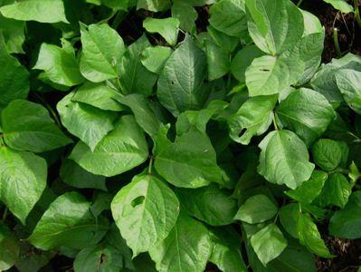
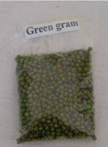
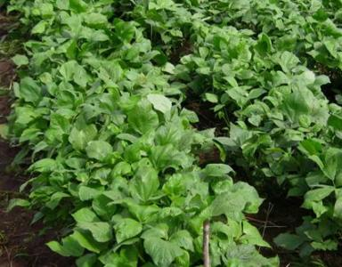

{kind=link}
{kind=link}
General Information and Agronomic Aspects
Grams are annual legume crops grown for their seed. Grams could be green, black or yellow in colour. The green grams are the most commonly grown in Kenya. Grams are native crops of India. Often called green gram or golden, it is cultivated in several countries of Asia, Africa, and the Americas. The dried beans are prepared by cooking or milling. They are eaten whole or split. The seeds or the flour may be used in a variety of dishes like soups, porridge, snacks, bread, noodles and even ice cream. Green gram also produces great sprouts, which can be sold in health food shops or eaten at home. Crop residues of V. radiata are a useful fodder. Green gram is sometimes specifically grown for hay, green manure or as a cover crop.
Nutritive Value per 100 g of edible Portion
| Raw or Cooked Green Gram | Food Energy (Calories / %Daily Value*) | Carbohydrates (g / %DV) | Fat (g / %DV) | Protein (g / %DV) | Calcium (g / %DV) | Phosphorus (mg / %DV) | Iron (mg / %DV) | Potassium (mg / %DV) | Vitamin A (I.U) | Vitamin C (I.U) | Vitamin B 6 (I.U) | Vitamin B 12 (I.U) | Thiamine (mg / %DV) | Riboflavin (mg / %DV) | Ash (g / %DV) |
| Green Gram cooked | 105 / 5% | 19.2 / 6% | 0.4 / 1% | 7.0 / 14% | 27.0 / 3% | 99.0 / 10% | 1.4 / 8% | 266 / 8% | 24.0 IU / 0% | 1.0 / 2% | 0.1 / 3% | 0.0 / 0% | 0.2 / 11% | 0.1 / 4% | 0.8 |
| Green Gram raw | 347 / 17% | 62.6 / 21% | 1.2 / 2% | 23.9 / 48% | 132.0 / 13% | 367 / 37% | 6.7 / 37% | 1246 / 36% | 114 IU / 2% | 4.8 / 8% | 0.4 / 19% | 0.0 / 0% | 0.6 / 41% | 0.2 / 14% | 3.3 |
| Green Gram sprouted raw | 30.0 / 2% | 5.9 / 2% | 0.2 / 0% | 3.0 / 6% | 13.0 / 1% | 54.0 / 5% | 0.9 / 5% | 149 / 4% | 21.0 IU / 0% | 13.2 / 22% | 0.1 / 4% | 0.0 / 0% | 0.1 / 6% | 0.1 / 7% | 0.4 |
*Percent Daily Values (DV) are based on a 2000 calorie diet. Your daily values may be higher or lower, depending on your calorie needs.
Climatic conditions, soil and water management
Green grams grow best at an altitude of 0-1600 m above sea level and under warm climatic conditions (28 to 30degC). They are well adapted to red sandy loam soils, but also do reasonably well on not too exhausted sandy soils. Green grams are not tolerant to wet, poorly drained soils. They are drought tolerant and will give reasonable yields with as little as 650 mm of yearly rainfall. Heavy rainfall results in increased vegetative growth with reduced pod setting and development.
Propagation and planting
Avoid planting green gram for more than one season because toxic residues and disease organisms from the previous green gram crop may affect the following crop adversely.
Land should be prepared to a medium tilth before planting and early enough so that planting can start immediately after the rain starts. When using oxen plough for planting, place the seed at the side of the furrow.
Propagation is by seed. There is no seed dormancy. Seeds may sprout in the pod under very humid conditions. In areas with higher rainfall, it is recommended to grow green grams on raised beds. Prepare the beds, raised about 20 cm and spaced 1 m from the centre of one bed to the centre of the next. Sow seeds on raised beds in two rows per bed, spaced 45 cm apart.
Green grams will respond to fertiliser or manure application but will normally give satisfactory results if grown on relatively good soil. Green gram is grown mainly on smallholdings, often as mixed crops or intercrops. Associated crops are usually of longer duration than green gram (sugar-cane, cotton, sorghum). To make use of a short cropping period, short-duration green gram is often relay-cropped.
Green gram (mung beans) varieties
| Variety | Maturity Days | Potential yield t/ha | Remarks |
| "KVR 22" ("N 22") | 80-90 | 1.0-1.3 |
|
| "KVR 26" (N 26) | 60-65 | 0.3-1.5 |
|
|  |
| Mungbean plant |
| (c) A.A.Seif, icipe
|
|  |
| Green gram seeds |
| (c) A.A.Seif, icipe
|
|  |
| Mungbean crop |
| (c) A.A.Seif, icipe
|
Examples of green grams varieties grown in Tanzania
- "Nuru" (performs well between 0 and 1350 m above sea level; days to flowering: 50; yield potential: 1.5 t/ha; resistant to mosaic disease; moderately resistant to bacterial blight)
- "Imara" (grows well between 0 and 1350 m above sea level; days to flowering: 50; yield potential: 1.5 t/ha; resistant to mosaic disease; moderately resistant to bacterial blight; it has wide adaptability)
Examples of green gram varieties grown in Uganda
- "N 26" (characteristics as in Kenya)
- "N 22" (characteristics as in Kenya)
Husbandry
With the newer cultivars ripening in 60 to 75 days, maximum yields are obtained at plant densities of 300 to 400,000 plants per ha. The later-maturing traditional cultivars generally need wider spacing. Usually no fertilisers are applied to green gram. Over the centuries, green grams adaptation to stable performance in marginal environments has resulted in a low yield potential, which limits responsiveness to better environments and improved cultural practices. However, if planted in heavily eroded soil gram will benefit from any kind of manure or compost.
Grams planted at the end of the long rains are normally intercropped into other major crop. In Meru, Kenya, green gram is a preferred intercrop for millet, each said to protect the other against diseases and pests. If grams are intercropped with maize, the maize spacing is the same as in pure stand, but the grams are interplanted mid-way between the maize rows. Early weeding is recommended. First weeding should be done just after emergence and second weeding just before flowering.
Harvesting
Harvesting is generally by two to five hand-pickings at weekly intervals and is the most expensive single operation in growing green gram. Short-duration cultivars, which ripen more uniformly, may be processed as whole plants on small rice threshers.Cultivars differ markedly in harvesting efficiency, depending on position (above or within canopy) and size of pods. Harvesting before the maturity of crop, usually result in lower yields, higher proportion of immature seeds, poor grain quality and more chances of infestation during storage. Delay in harvesting results in shattering of pods and other losses caused by pests.
In Kenya, harvesting when 95% of pods have turned black is recommended. The whole plant can then be uprooted and dried for about 2 days, then threshed and winnowed. Harvesting during adverse weather condition i.e. rains and overcast weather should be avoided. Such weather is conducive to fungal infection. The harvested bundles should be kept in one direction in order to ascertain efficient threshing. They should be stacked in a dry, clean place in cubical way to facilitate circulation of the air around.
Storage
Grams must be dry before storage. Like most pulses moisture content at storage should not be above 13%. Grams are very susceptible to bruchid (bean weevil) attack and are best stored immediately after sun drying either in airtight drums tins, gunny bags and be kept in a clean, ventilated place. Mixing seed with ash is effective against bruchids, also treatment with sunflower oil or mixing with neem leaves is said to be effective against storage pests. Proper drying of grains is very important to prevent the growth of fungi and contamination with aflatoxins. Infected grains should be separated from sound grains to avoid aflatoxin contamination.